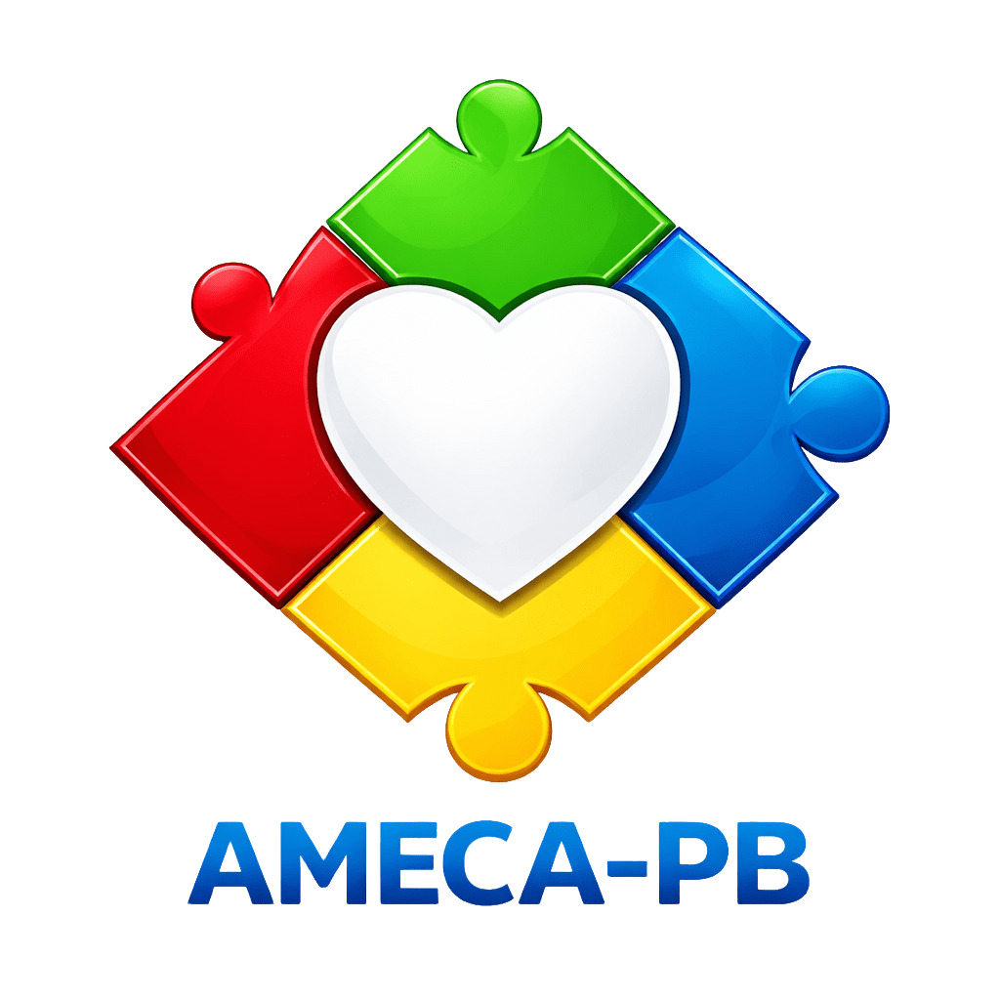
Associação de Mães Atípicas de Poço Branco RN
O Cuidado em Rede Transformando Vidas
Oferecer cuidado em rede, suporte integral e atendimentos especializados para crianças atípicas, seus familiares e responsáveis em Poço Branco. Atuar por meio de orientação e suporte multidisciplinar para promover a inclusão prática, o desenvolvimento global e um ambiente de cuidado especializado.
Transformar vidas através do cuidado em rede, garantindo que nenhuma família caminhe sozinha durante ou após o diagnóstico. Ser referência no engajamento da sociedade para a conscientização sobre a neurodiversidade e a inclusão efetiva.
Os atendimentos especializados da Ameca acontecem de modo individual, garantindo uma abordagem focada nas necessidades particulares de cada criança. Contamos com um time técnico altamente qualificado composto por:
O cuidado em rede se estende às mães e responsáveis através de rodas de conversa e encontros de orientação. Esses momentos oferecem um espaço seguro de escuta, acolhimento emocional e troca de experiências, fortalecendo a rede de apoio, aliviando sobrecargas e empoderando as famílias para os desafios diários da inclusão.
As atividades coletivas são pensadas para promover a socialização e o aprendizado mútuo entre as crianças. Em um ambiente lúdico e mediado, elas desenvolvem habilidades sociais, empatia e o senso de pertencimento, mostrando que a diversidade é a nossa maior força.
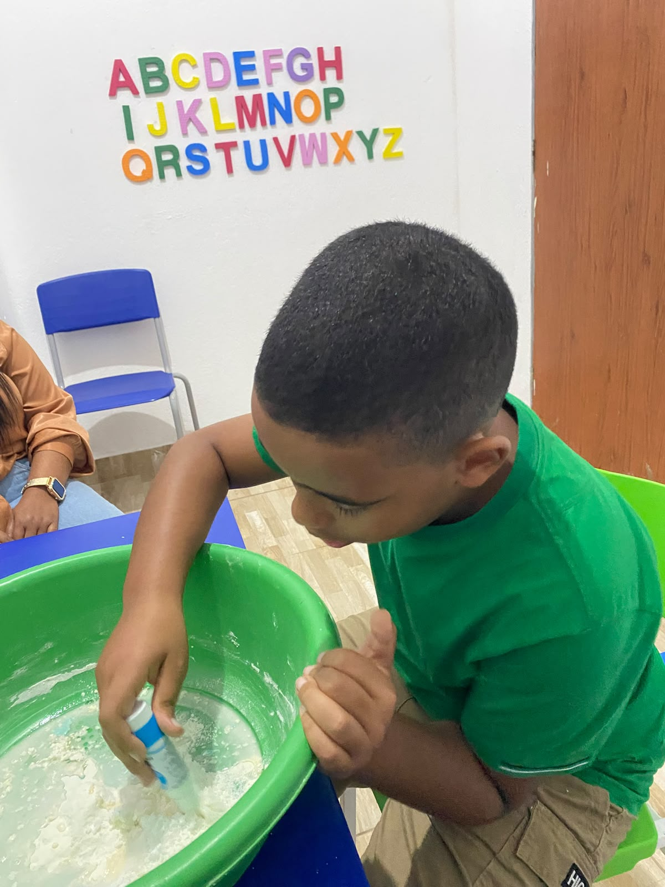
Atividades que utilizam diferentes texturas e elementos da natureza estimulam a criatividade, o processamento sensorial e a conexão tátil das crianças durante as sessões.
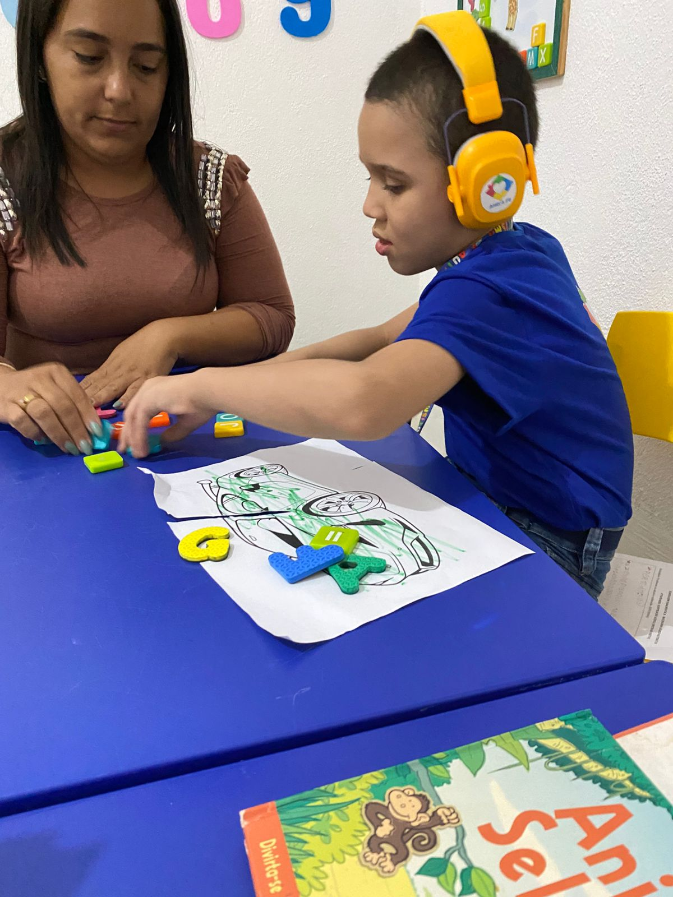
O ambiente é totalmente adaptado para as necessidades de autorregulação. O uso de recursos, como abafadores de ruído, garante o conforto térmico e acústico necessário para o foco nas tarefas.
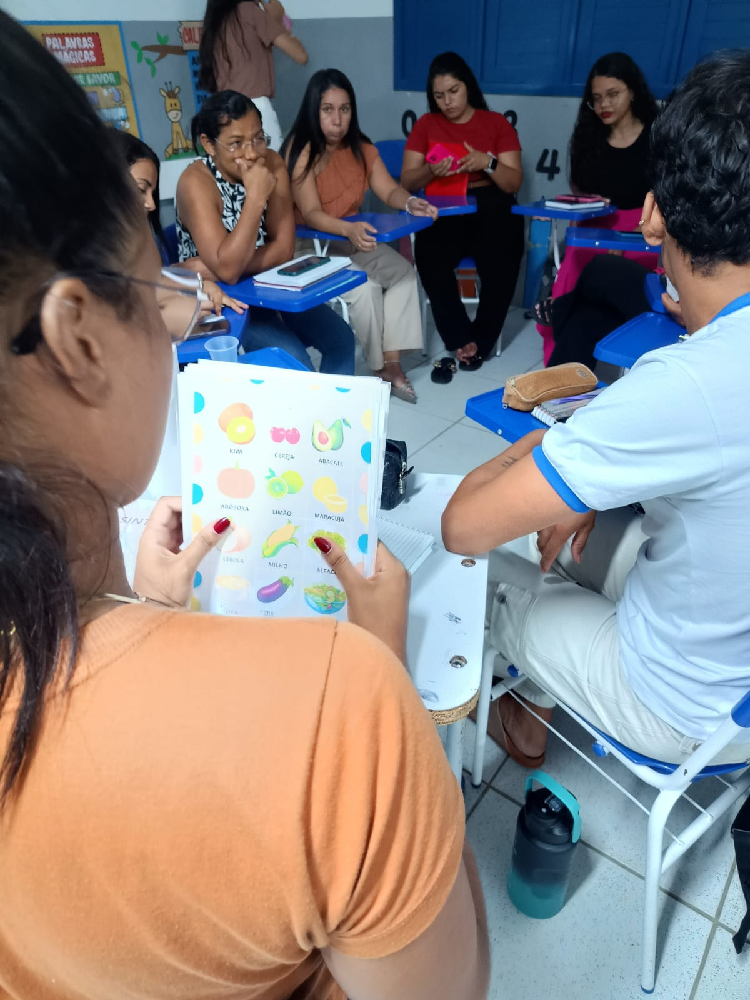
Integração em espaços coletivos sob mediação técnica, oferecendo escuta qualificada, orientação e fortalecimento de vínculos para mães e cuidadores no processo de acompanhamento.
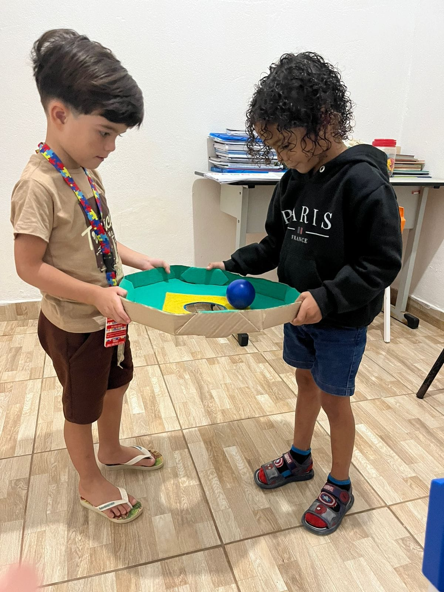
Exercícios direcionados, recortes, colagens e dinâmicas corporais essenciais para a evolução cognitiva, aprimoramento do equilíbrio, planejamento motor e autonomia nas atividades diárias.
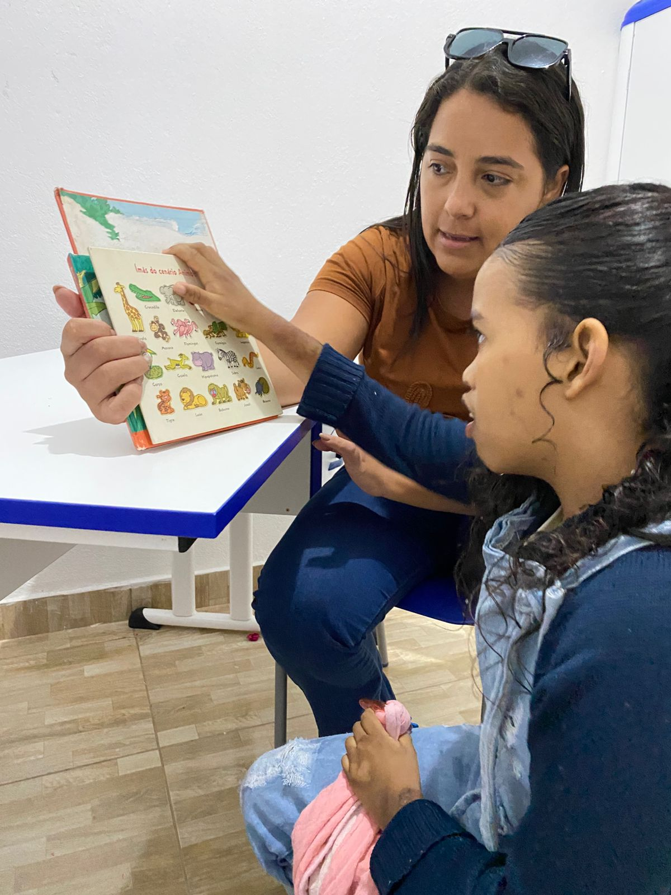
Promovemos o orgulho e a conscientização sobre a diversidade neurodivergente, reforçando a mensagem fundamental de que a inclusão efetiva se faz com respeito e amor na comunidade.
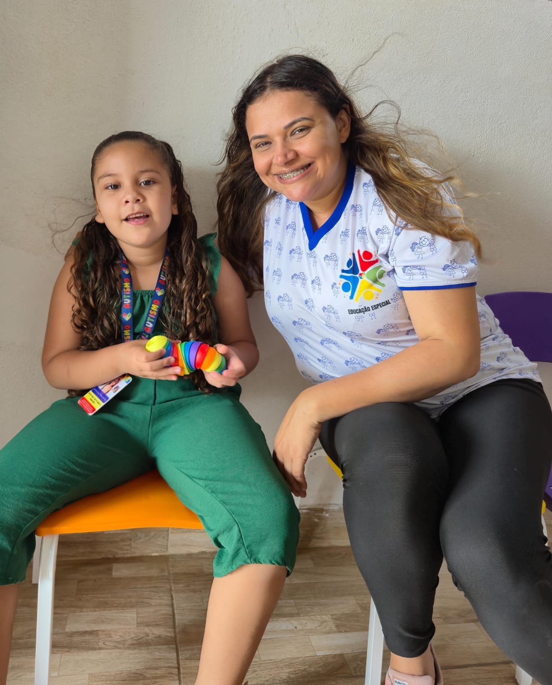
Momentos dedicados em sessões onde as particularidades e ritmos de cada criança são respeitados, com estímulos e abordagens adequadas a cada etapa do seu desenvolvimento pessoal.
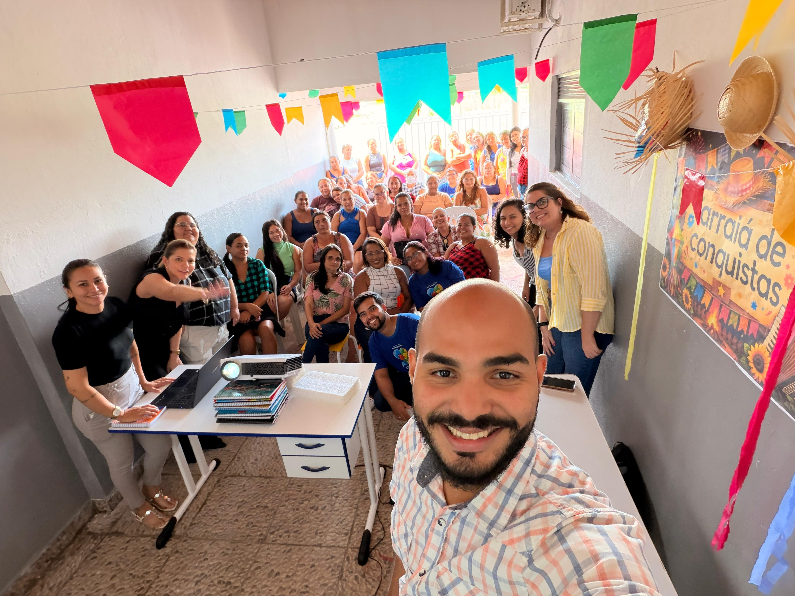
Encontros periódicos para fortalecer a rede de apoio familiar, alinhados a ações de engajamento para a conscientização da sociedade de Poço Branco sobre a inclusão.
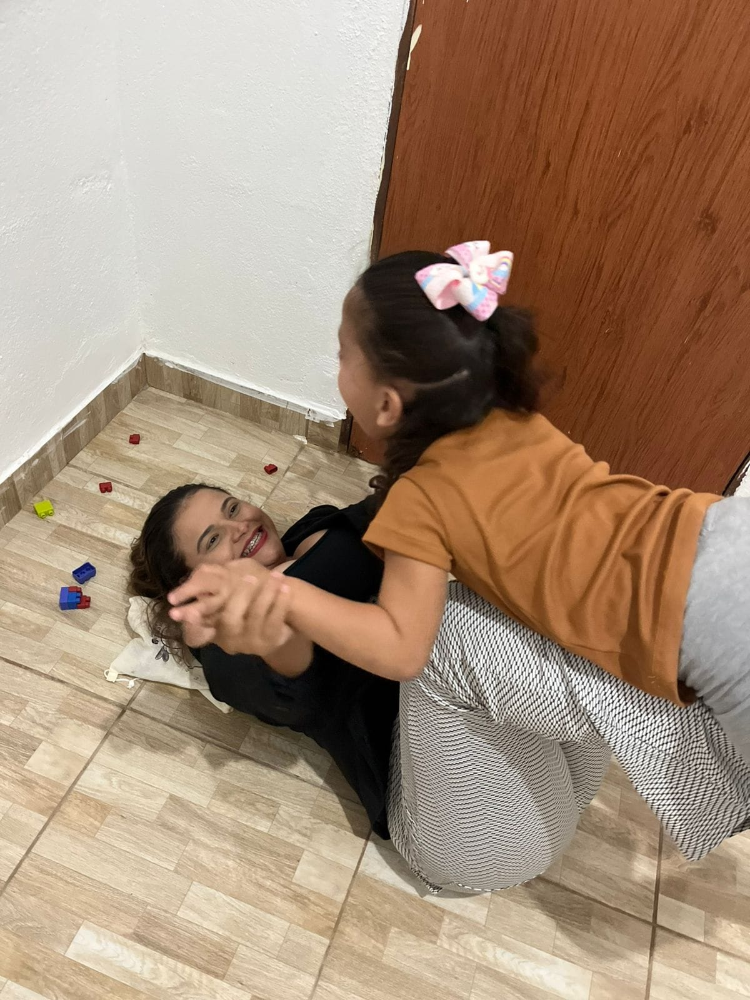
Intervenções direcionadas e reuniões da equipe técnica para alinhar diagnósticos e estabelecer metas conjuntas para o desenvolvimento global de cada criança.
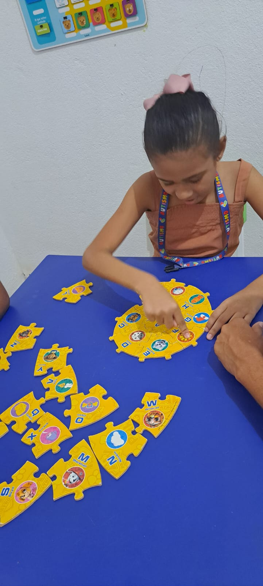
Atividades focadas no desenvolvimento da memória, atenção sustentada e raciocínio lógico através de desafios, dinâmicas estruturadas e recursos adequados à faixa etária.
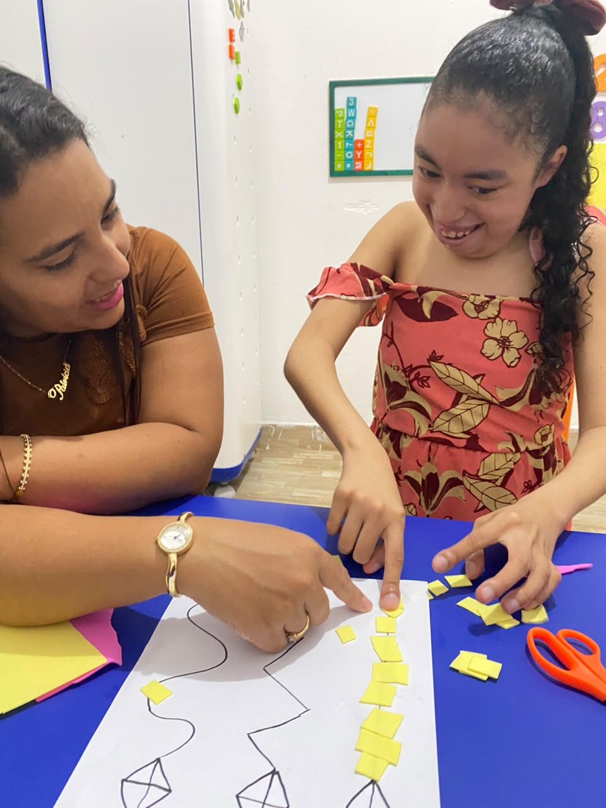
Utilização de recursos lúdicos e materiais concretos adaptados para facilitar a assimilação de conceitos essenciais, superação de desafios escolares e facilitação do aprendizado.
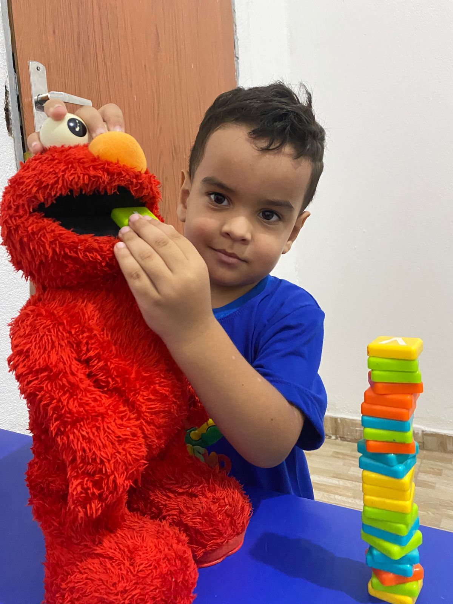
Práticas guiadas pela equipe para a ampliação do vocabulário, implementação de comunicação alternativa e desenvolvimento fluido da linguagem verbal e não verbal.
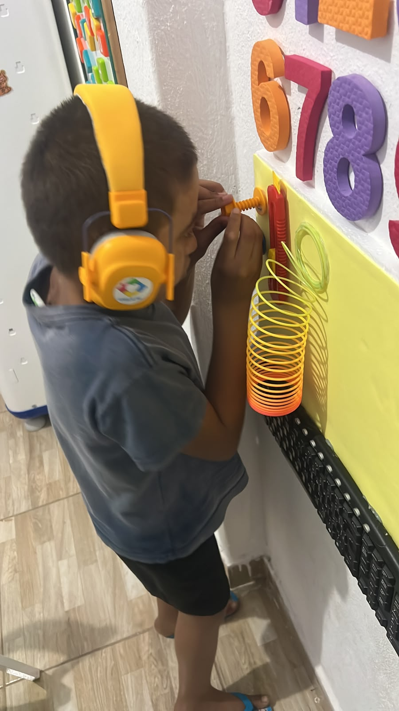
Interações em grupo preparadas para trabalhar a empatia, o compartilhamento e painéis interativos que reforçam diariamente afirmações de valor e autoestima na criança.
A transformação que realizamos diariamente em Poço Branco só é possível graças à força da nossa comunidade. Junte-se a nós na construção de um futuro mais inclusivo.
Seja você também um apoiador